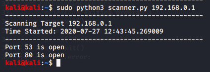

will scan through a range of ip adresses given by us and report to us whether a port is open or not
for scannign ports we actually have to take
'for port in range(1,65535):
bt that would take forever so we do 50 to 85

Even this runs a bit slowly coz threading isnt used na